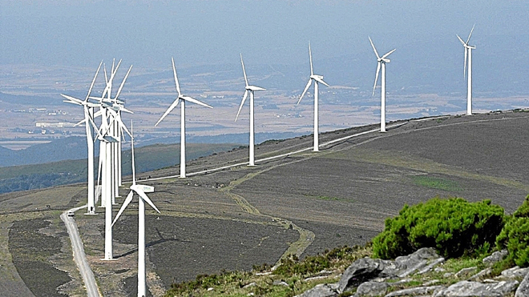
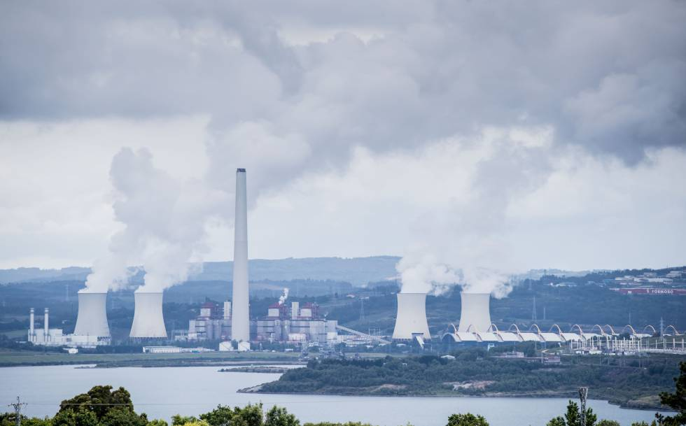

Las fuentes de energía |
||
Una fuente de energía es cualquier material o fenómeno a partir del cual podemos obtener energía; materiales como el carbón o el petróleo, y fenómenos como el viento o las olas, constituyen fuentes de energía. Las fuentes de energía pueden ser, además, renovables o no renovables. LAS FUENTES DE ENERGIA RENOVABLES Las fuentes de energía renovables son aquellas que no se agotan aunque las utilicemos mucho. Además, la energía que se obtiene de estas fuentes es menos contaminante para el medio ambiente que la obtenida de las fuentes de energía no renovables. Las fuentes de energía renovables más importantes son la energía solar, la eólica, la hidráulica, la mareomotriz, la de biomasa y la geotérmica. LAS FUENTES DE ENERGIA NO RENOVABLES Las fuentes de energía no renovables se consumen a gran velocidad pero se regeneran muy lentamente, por lo que se agotan con su uso. Además, su utilización contamina el medio ambiente. Las fuentes de energía no renovables más importantes son los combustibles fósiles, como el petróleo, el carbón y el gas natural, que producen energía térmica al ser quemados, y las sustancias radiactivas. |
||
|  |
 |
|
| En
la imagen se muestra una vista panorámica de un parque eólico. En ella
se pueden ver varios aerogeneradores que producen energía eléctrica a
partir de la energía del viento. La energía eólica es uno de los ejemplos de fuente de energía renovable. |
Aquí
se muestra una centrar térmica de grandes dimensiones. En una central
térmica se produce energía eléctrica a partir de la energía que se
obtiene de un combustible fósil. En el caso de la imagen se trata de
carbón. |
|
|
||
|
||